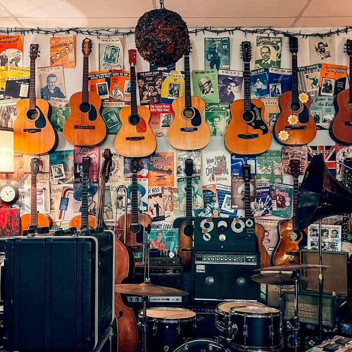
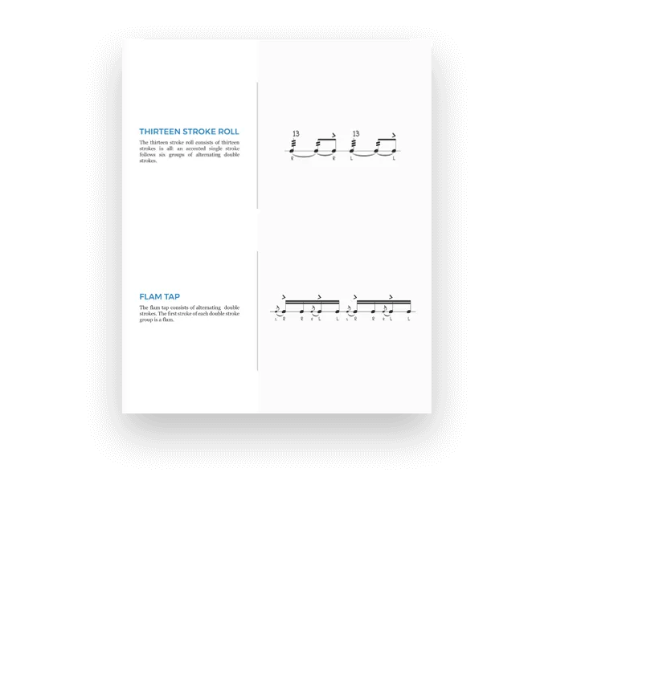
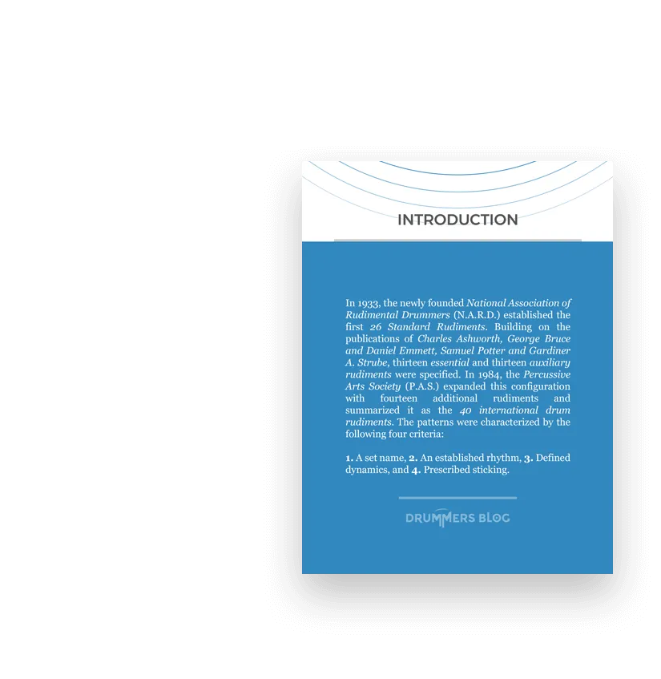

TheorieMeine Ziele
Als Schlagzeuger möchte ich mich weiterentwickeln — sowohl in künstlerischer als auch in musikalischer Hinsicht. Und genau das ist es, was ich mir für dich wünsche. Deshalb teile ich hier meine Erfahrungen mit dir und möchte dich dazu motivieren, das Beste aus dir zu machen.
Ich weiß, dass das unentwegte Streben nach Selbstverbesserung überwältigend erscheinen kann. Deshalb zeige ich dir hier verschiedene Übungskonzepte, die ich selbst ausprobiert habe und die mir dabei helfen, in kürzester Zeit mehr zu erreichen. Was ich dir biete, erfährst du hier.
Neueste Blogposts
“Dieser Blog ist dem Teilen von Ideen, Konzepten und Übungen gewidmet, die dir dabei helfen, ein besserer Schlagzeuger zu werden. Du musst nicht perfekt sein. Du musst es nur angehen.“
Bücher
Rudiments: Das Nachschlagewerk
Mein neues E-Paper gibt dir einen umfassenden Einblick in die 40 International Drum Rudiments . Diese Figuren sind die Grundlage, um dein Vokabular als Schlagzeuger zu erweitern.
Auf 51 Seiten findest du: Grundlagen für eine korrekte technische Ausführung der Figuren, Bezug der Rudiments zur US-amerikanischen Militärmusik, Verbindung des Rudimental-Drummings zur orchestralen Spielweise der kleinen Trommel, korrekte Wahl des Tempos, Roll Rudiments, Diddle Rudiments, Flam Rudiments, Drag Rudiments, sowie ein kurzes Literaturverzeichnis und ein Glossar.
Wenn du mehr über Rudiments wissen willst, dann ist dieses E-Paper genau das Richtige für dich!

